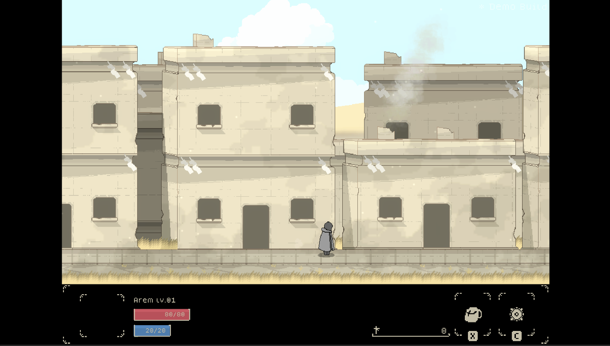
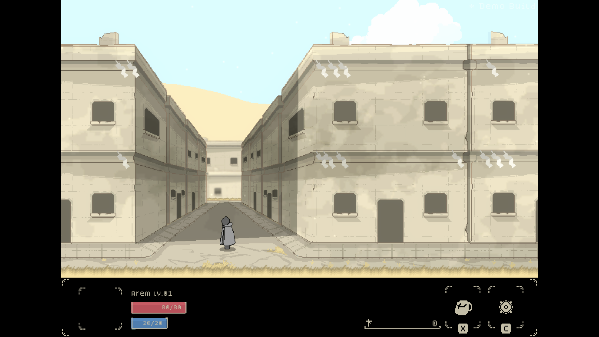
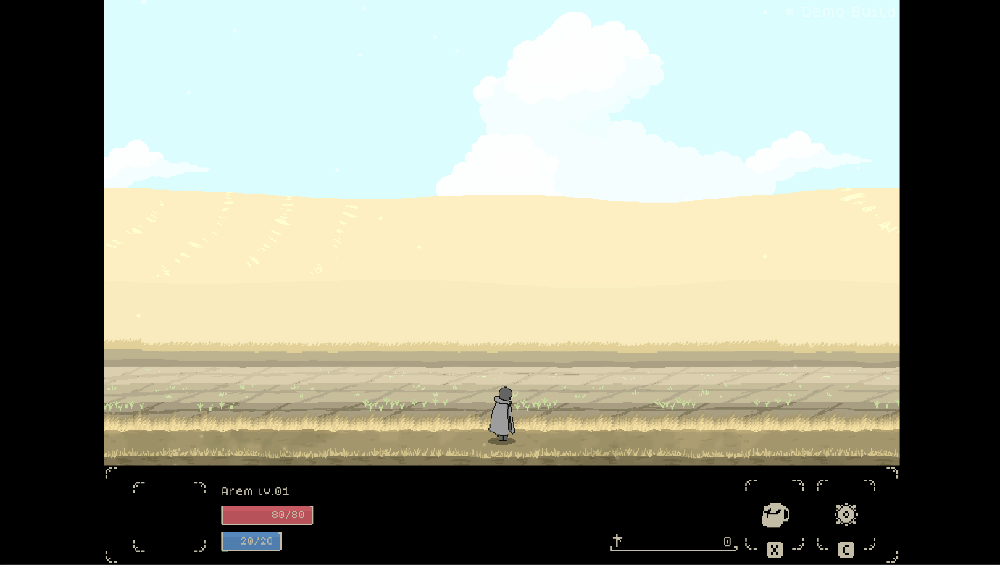
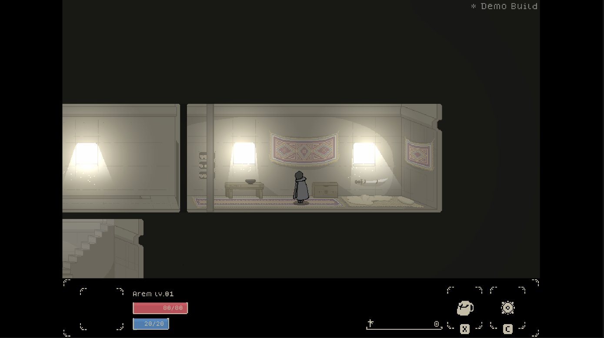
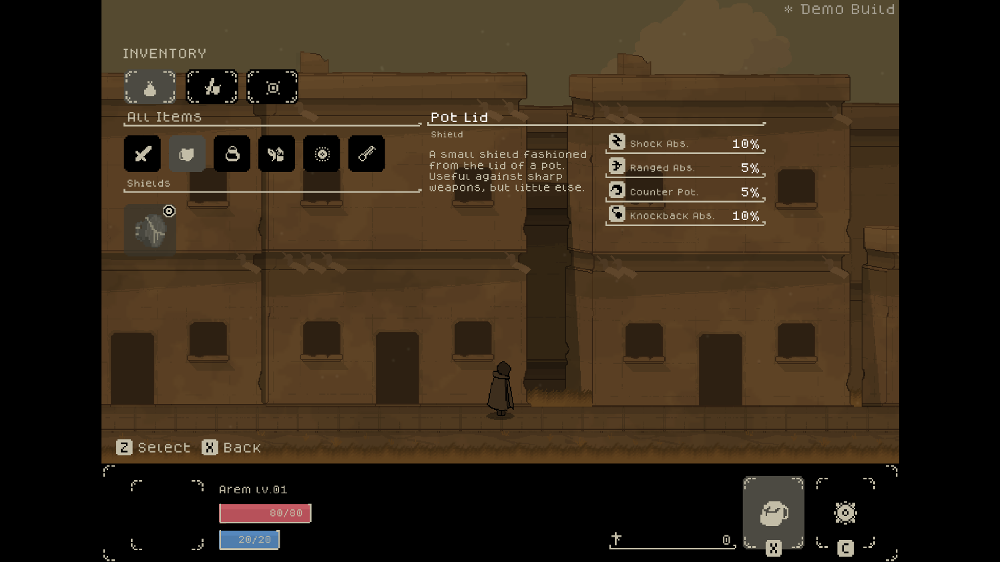

A Song Of Sunlight is an indie RPG set in an isolated community built upon the ruins of human arrogance- the Well. Featuring a novel combat system and pushing the envelope of video game narrative, the game explores the breakdown of human relationships and the quiet dread of extinction.

Arem has lived his life surrounded by waves and fields of dying grass. Upon his small island lies the Settlement, a community of just three thousand- the Children of the Sun. Passing the long years in prayer and simple contentment, the blessed people of the island hold to their traditions to survive. Arem, like all young men and women of the Settlement, knows true the tenets of his people: to perform one’s obligation for the greater good, and never to enter the Well- a passage leading deep into the unknown earth below.

Raised to perform his own obligation of Woundbearing, Arem desires not but to come of age and play his crucial part to improve the lives of his community- none more so than Sachita, a shunned girl bearing the physical memory of a burning sickness long past.

Yet, as Arem finally comes to accept the duty of which he always dreamed, he finds his certainty shattered by the truth of the horror held at the Settlement’s close reach. Crushed by the weight of a new burden to bear, Arem finds that he must deliver salvation to his people before their time has come.

Descending into the Well, Arem will discover the breaking point of his relationships and the meaning of suffering.
